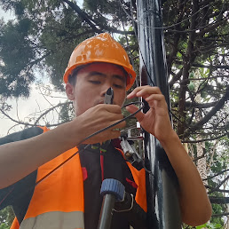
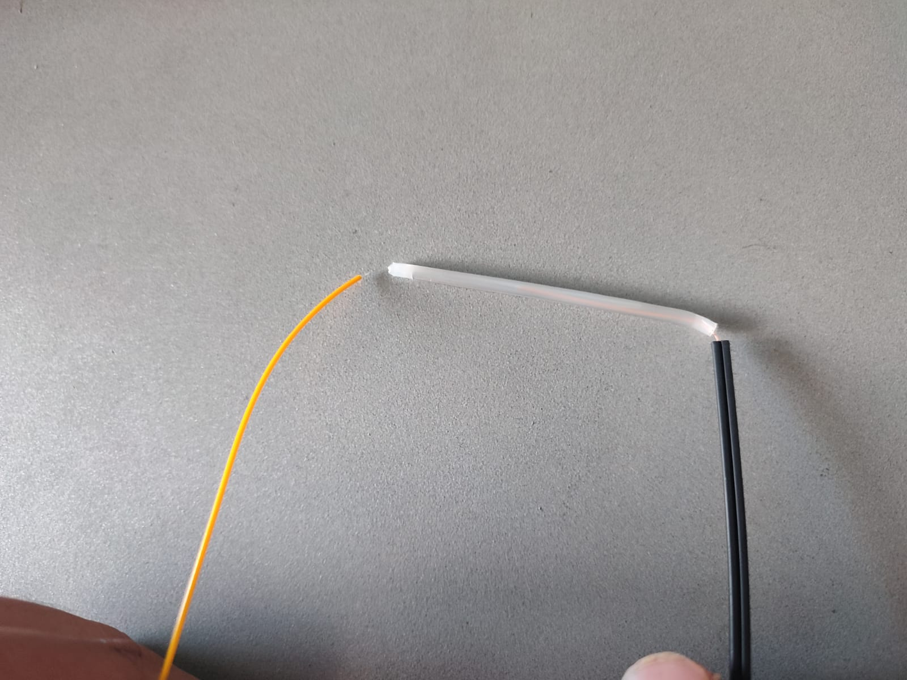
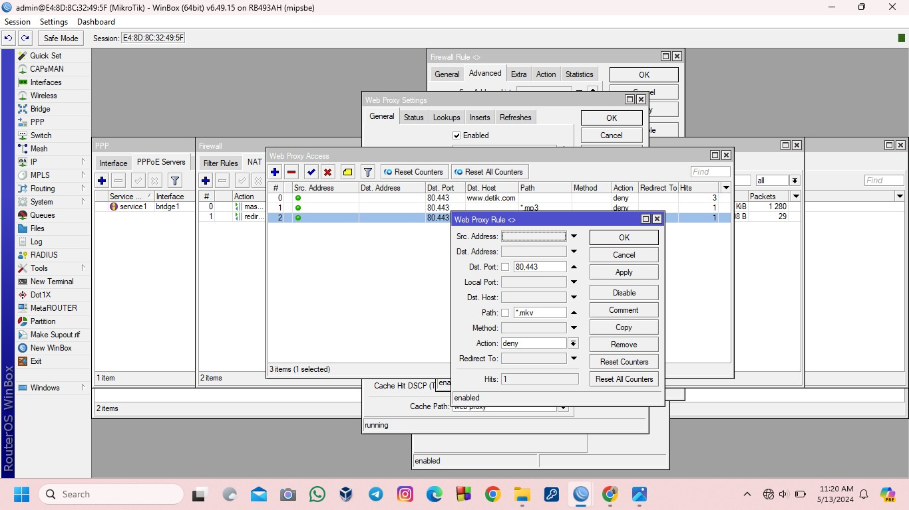
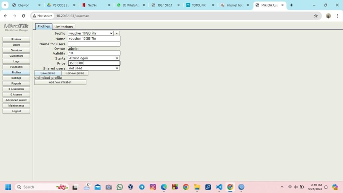

Profil Pribadi
Saya adalah Paujan Solahudin Putra, seorang pelajar dengan jurusan TKJ di SMK Negeri 4 Bandung. Selama saya bersekolah, saya telah mencapai nilai yang di standarkan oleh guru dan memiliki pengalaman yang cukup dalam jurusan ini. Saat ini saya sedang akan melaksanakan program sekolah untuk menerapkan ilmu yang dipelajari di sekolah ke lapangan kerja.
Keahlian
- Penyambungan kabel Fiber Optik
- Pemasangan kabel Fiber Optik
- Konfigurasi PPPoE Server
- Konfigurasi Firewall Router
- Konfigurasi Voucher WiFi
Proyek dan Latihan
Pemasangan Fiber Optik
Proyek ini dilakukan dengan pemasangan dari tiang ke tiang.
Penyambungan Fiber Optik
Latihan penyambungan Fiber Optik dengan Patchcord.
Proyek Konfigurasi PPPoE Server

Pada konfigurasi ini bagi orang yang sangat awam ini sangat susah tetapi ketika kita sudah bisa sekali maka kita akan sangat mudah untuk mengkonfigurasinya.
Proyek Konfigurasi Firewall
Pada konfigurasi firewall kita ditugaskan untuk memblokir website, domain, name, dan file yang ditugaskan oleh guru.
Proyek Konfigurasi Voucher WiFi
Proyek ini ditugaskan untuk membuat voucher wifi menggunakan userman mikrotik.
Kontak
Email: paujansp11@gmail.com
Nomor Telepon: +62 8952772413